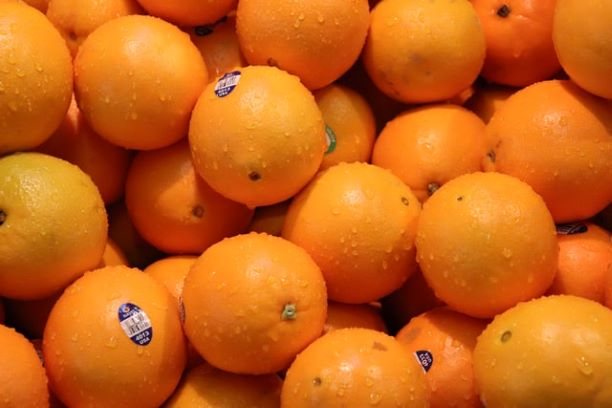
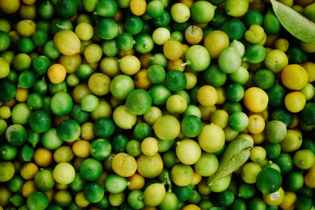

Grapefruits can be white, pink, or red. The taste can also vary from sweet to sour depending on the variety. White and pink varieties tend to be tart, while reds are sweeter.Grapefruit has many nutritious elements. It is an excellent source of antioxidants such as vitamin C.

At Mattie's Fruits we pride ourselves in offering only the best choice oranges.Oranges are the largest citrus fruit in the world and Orange juice is the most popular fruit juice.

Lemons are native to Asia and are a hybrid between a sour orange and a citron.They are rich in vitamin C.
Lemons trees can produce up to 600kgs of lemons every year and produce fruit all year round.
Lemon zest, grated rinds, is often used in bakingand lemon tree leaves can be used to make tea.